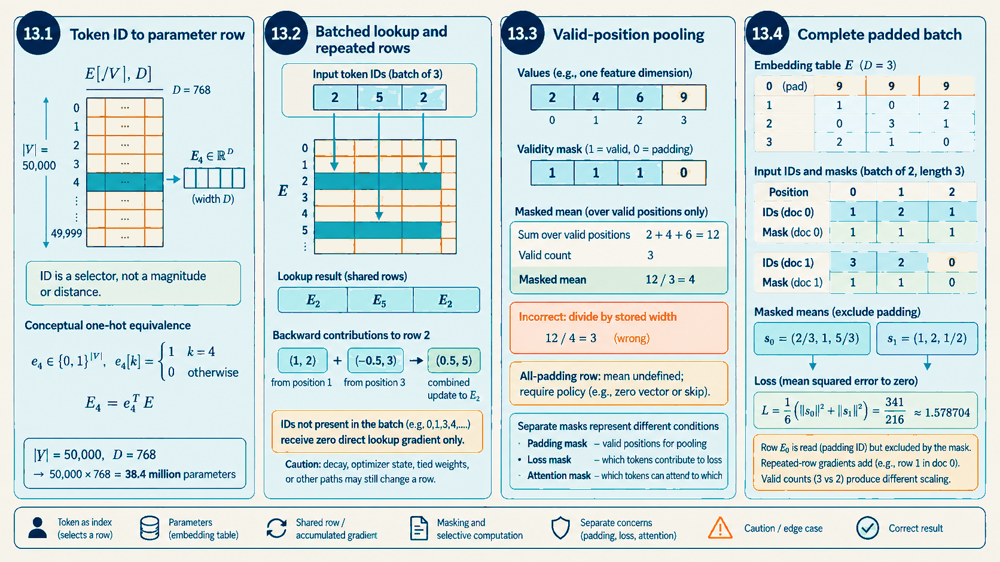
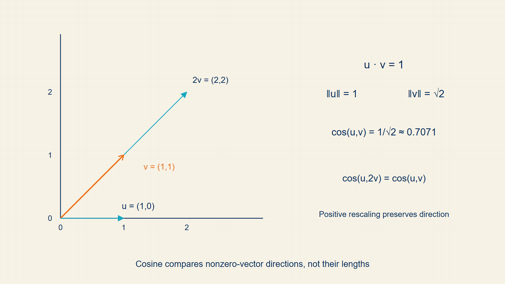

13 Embedding Tables: Token Lookup, Gradients, and Pooling
A token ID identifies a vocabulary entry. Its numerical size does not measure the token’s meaning. An embedding table supplies trainable coordinates that a model can combine, while preserving the distinction between an integer identifier and its vector.

13.1 From a token ID to a parameter row
The vocabulary order provides no reason for ID 4 to resemble ID 5 more than ID 100. The IDs select rows. The stored coordinates, and the objective that changes them, determine any useful geometric relationships.
An embedding matrix stores one parameter row for each vocabulary entry:
\[ E\in\mathbb{R}^{\lvert V\rvert\times D} \tag{13.1}\]
The vocabulary is \(V\), its size is \(|V|\), and each row has \(D\) coordinates. An embedding lookup selects the row indexed by the integer token ID \(x_t\):
\[ \operatorname{emb}(x_{t})=E_{x_{t},:} \tag{13.2}\]
The result has shape \([D]\), unlike the scalar ID. IDs must be in range and refer to the same vocabulary order used by the table. An ID from another tokenizer can select a valid row with the wrong intended token.
For a one-hot column vector of length \(|V|\), the equivalent matrix expression is
\[ \operatorname{emb}(x_{t})=\operatorname{onehot}(x_{t})^{T}E \tag{13.3}\]
Transposing the indicator gives a row of shape \([1,|V|]\). Its single one selects a row of \(E\), giving shape \([1,D]\). Removing the singleton row axis gives the same coordinates as the lookup vector of shape \([D]\). Lookup performs this selection without materializing a vocabulary-wide indicator for every position.
Example: Table size and row selection
With \(|V|=50{,}000\) and \(D=768\), the table contains \(50{,}000(768)=38.4\) million scalar parameters.
In a separate table with three-coordinate rows, ID 4 selects row 4 and returns a length-three vector. For a four-entry vocabulary, \(\operatorname{onehot}(2)=(0,0,1,0)\) selects row 2 through the same multiplication.
Conclusion: Vocabulary size controls the number of stored rows, while embedding width controls the returned vector. The ID selects coordinates without serving as a numerical feature itself.
The row values may start randomly. Lookup alone does not give them a semantic interpretation. Training supplies a task-dependent reason to change them, and repeated uses of a row share its parameters.
13.2 Batched lookup and repeated-row gradients
The same token can occur at several positions in one batch. Each position reads the same table row, so backward must combine their contributions to that shared parameter.
For integer IDs \(X\) of shape \([B,T]\), the gathered floating-point vectors are
\[ H_{0}=E[X],\quad H_{0}\in\mathbb{R}^{B\times T\times D} \tag{13.4}\]
The axes index examples, positions, and embedding coordinates. The one-hot identity from §13.1 still applies at each position. If the loss depends on \(E\) only through this gather, an unused row has zero direct lookup gradient:
\[ j\notin\mathcal{I}_{B}\quad\to\quad\frac{\partial L}{\partial E_{j,:}}=0 \tag{13.5}\]
Here \(\mathcal I_B\) is the set of IDs selected by the batch. This is a derivative statement, not a guarantee that an optimizer leaves every unused row unchanged. Weight decay, stored momentum, or another use of the same matrix can change such a row.1
In particular, a tied weight is one parameter matrix reused for different model operations. If an embedding table also scores output vocabulary entries, that output path can contribute gradients beyond the rows gathered as inputs.
Example: Repeated IDs share one gradient row
The IDs \((2,5,2)\) produce \(H=(E_{2,:},E_{5,:},E_{2,:})\) with shape \([3,D]\). Positions 1 and 3 both depend on row 2, so their derivatives add there. Position 2 contributes to row 5. Unused row 7 receives no direct lookup derivative under the stated loss condition.
For an illustrative width-two upstream gradient, let the row-2 contributions be \((1,2)\) and \((-0.5,3)\). The stored row-2 gradient is \((0.5,5)\).
Conclusion: Repeated tokens create additional uses of one parameter row, not additional independent rows. Contributions add even when some coordinates oppose one another.
Pooling combines a sequence’s vectors into one fixed-width vector. The code below averages the three positions in each document. §13.3 develops this mean and its padding correction.
The runnable PyTorch code below uses nn.Embedding(6, 3). Its IDs have shape [2,3], its token vectors [2,3,3], and its pooled document vectors [2,3]. ID 0 is an ordinary token here. There is no padding in this example.
Code example: Embedding lookup, pooling, and selected-row gradients
import torch
import torch.nn as nn
embedding = nn.Embedding(num_embeddings=6, embedding_dim=3)
token_ids = torch.tensor([[1, 2, 1], [3, 2, 0]])
token_vectors = embedding(token_ids)
document_vectors = token_vectors.mean(dim=1)
loss = document_vectors.square().mean()
loss.backward()
print(token_vectors.shape, document_vectors.shape)
print(embedding.weight.grad.abs().sum(dim=1))The mean across three positions gives document vectors \(s_0\) and \(s_1\). The loss then averages the squares of their six coordinates. Therefore \(\partial L/\partial s_b=s_b/3\), and each occurrence contributes \(s_b/9\) through the positional mean.
Row 1 occurs twice in document 0 and receives \(2s_0/9\). Row 2 occurs in both documents and receives \((s_0+s_1)/9\). Rows 0 and 3 each receive \(s_1/9\). Rows 4 and 5 have zero direct lookup gradient. A selected row’s gradient can still vanish through its values or cancellation.
The code prints shapes and one absolute-gradient sum per vocabulary row. Random initial rows make those sums variable. The check demonstrates lookup, both mean factors, and gradient accumulation, not a learned document representation.
nn.Embedding gathers rows without a dense vocabulary projection. Its gradient storage is dense by default, with sparse storage available as a separate option. Lookup reads selected rows. The amount of row data read is one cost to measure. Throughput depends on row width, reuse, hardware, and the surrounding computation. A padding_idx can suppress the designated row’s direct lookup gradient. It does not turn every later use or optimizer operation into a padding-aware operation.
13.3 Pooling unequal sequences with a valid-position count
The affine classifier head from §12.3 expects one fixed-width document vector, even when documents have different token counts. Combining token vectors can provide that width, but added padding must not change the representation of the original text.
Mean pooling averages the vectors across retained positions. For \(T>0\) unpadded vectors \(h_t\in\mathbb R^D\), it is
\[ s=\frac{1}{T}\sum_{t}h_{t} \tag{13.6}\]
In a padded batch, let \(m_{b,t}\) be 1 for a valid position and 0 for padding. Masked pooling excludes padding from both the vector sum and its denominator:
\[ \begin{aligned}N_b&=\sum_{t=1}^{T}m_{b,t}>0,\\s_b&=\frac{\sum_{t=1}^{T}m_{b,t}h_{b,t}}{N_b}.\end{aligned} \tag{13.7}\]
The valid count \(N_b\) is calculated separately for each document. Multiplication by \(m_{b,t}\) excludes an invalid vector, including a nonzero padding vector. Division by \(N_b\) averages the retained positions rather than the stored width. A row with \(N_b=0\) has no defined mean. The example policy is to reject it before division.
The validity information comes from §2.2. Its consumer here is pooling. A loss mask determines which targets contribute to loss, while an attention mask controls which positions may be read. Those operations are not interchangeable.
Example: Padding must not change the mean
The scalar token values 2, 4, and 6 have mean \((2+4+6)/3=4\). Appending a zero gives unmasked mean \(12/4=3\). Zero padding alone therefore fails to preserve the result.
With mask \((1,1,1,0)\), the numerator is still 12 and the valid count is 3, giving 4. Even padding value 9 gives the same masked result because its multiplier is zero.
Conclusion: Masking the numerator is insufficient if the denominator still counts padding. Both must refer to the same retained positions.
Different aggregation choices retain different information:
- Sum pooling returns width \(D\) and preserves an overall count effect. Repeating all tokens doubles the sum.
- Mean pooling returns width \(D\) and removes that simple count scaling. Repeating all tokens leaves the mean unchanged.
- Max pooling keeps the largest valid value of each coordinate. It emphasizes presence but discards multiplicity. Invalid positions must be excluded even when valid coordinates are negative, because otherwise zero padding could become the maximum instead of those valid negative values.
- Fixed concatenation joins \(N\) vectors into width \(Nd\), retaining their positional slots. One policy pads shorter inputs with zero vectors and truncates longer inputs. Storage and following-layer cost grow with \(N\).
Sum, mean, and max are unchanged by reordering static token vectors. If a sequence model first makes each vector depend on context, pooling can retain some order information already encoded there. CLS pooling takes a designated classification token’s representation. It requires a model and training objective that make that representation useful, not merely inserting a marker.
Pooling only combines vectors. A classifier head uses the pooled result to score task outputs. Training may also change the vectors that enter pooling, but that is a separate operation from choosing mean, sum, max, or concatenation.
13.4 A padded ID batch through lookup, pooling, and gradients
Two documents can share stored width while contributing different numbers of vectors to their means. The following chosen table values make every contribution visible before any optimizer update.
Use a six-row table of width three, with \(E_0=(9,9,9)\), \(E_1=(1,0,2)\), \(E_2=(0,3,1)\), and \(E_3=(2,1,0)\). Rows 4 and 5 are unused and may be zero in this illustration.
The ID rows are \((1,2,1)\) and \((3,2,0)\). Their validity masks are \((1,1,1)\) and \((1,1,0)\). Here ID 0 occupies a masked padding position, unlike the ordinary token in §13.2’s separate code example.
Use §13.2’s gather on the embedding table with the \([2,3]\) array of integer IDs. The gathered vectors have shape \([2,3,3]\). Row 0 is read but excluded by its position mask.
The first document sums \(E_1+E_2+E_1=(2,3,5)\) and divides by 3, giving \(s_0=(2/3,1,5/3)\). The second sums \(E_3+E_2=(2,4,1)\) and divides by 2, giving \(s_1=(1,2,1/2)\).
For an unpadded document, §13.3’s mean divides the vector sum by its token count. For the second padded row, the valid-position denominator is two. An unmasked mean would instead include \((9,9,9)\) and divide by three.
To inspect backward, choose the mean squared document-coordinate loss \(L=(\|s_0\|^2+\|s_1\|^2)/6\). It gives \(\partial L/\partial s_b=s_b/3\). A valid occurrence in document 0 contributes \(s_0/9\). One in document 1 contributes \(s_1/6\).
Thus row 1 receives \(2s_0/9\), row 2 receives \(s_0/9+s_1/6\), and row 3 receives \(s_1/6\). Row 0 receives zero from the masked position. Rows 4 and 5 receive no contribution. The resulting loss is \(341/216\approx1.578704\).
Conclusion: Lookup preserves shared row identity, while the mask controls each position’s participation. Different valid counts create different gradient factors within the same rectangular batch. No classifier or optimizer is needed to establish those facts.
The numeric example gives the coordinates. The cluster sketch shows a possible qualitative arrangement. Whether the squared-loss training learns semantic neighborhoods requires evidence beyond this picture.

The table and aggregation now have a complete numerical contract. Chapter 14 asks which objective gives token vectors useful relationships through observed text context.
Chapter checkpoint
Does zero-valued padding make an unmasked mean correct? Can a table row change when its current direct lookup gradient is zero?
Answer: No. Padding still enlarges the unmasked denominator. A valid-position mean excludes padding from both sum and count. Decay, stored optimizer state, or another use of the same parameter can change a row with zero current lookup gradient.